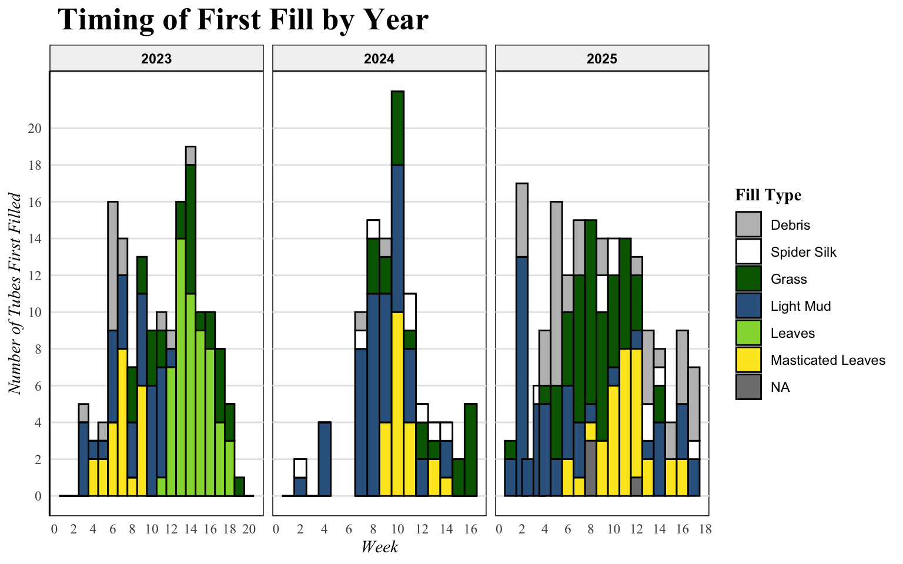
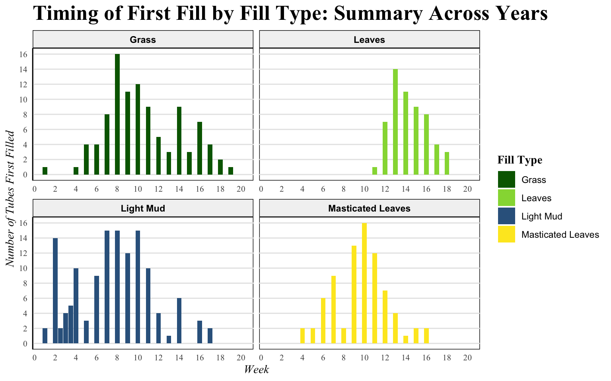
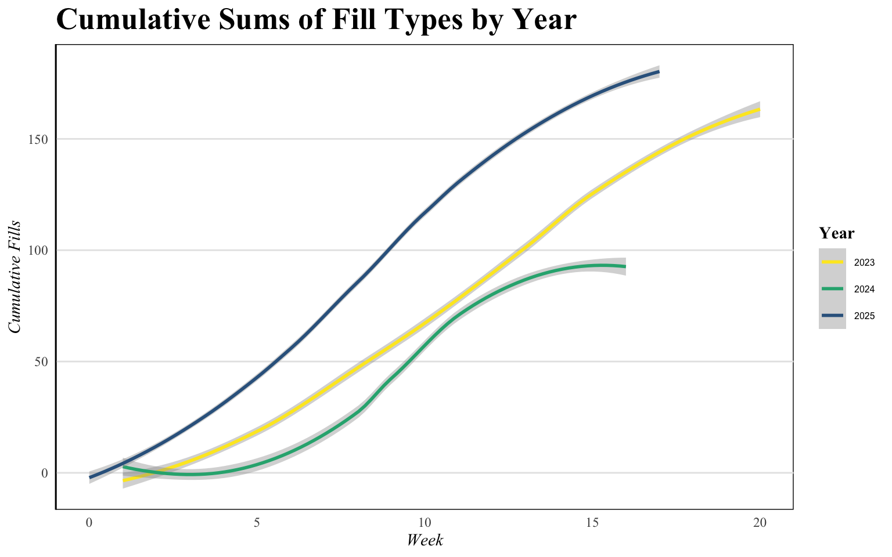
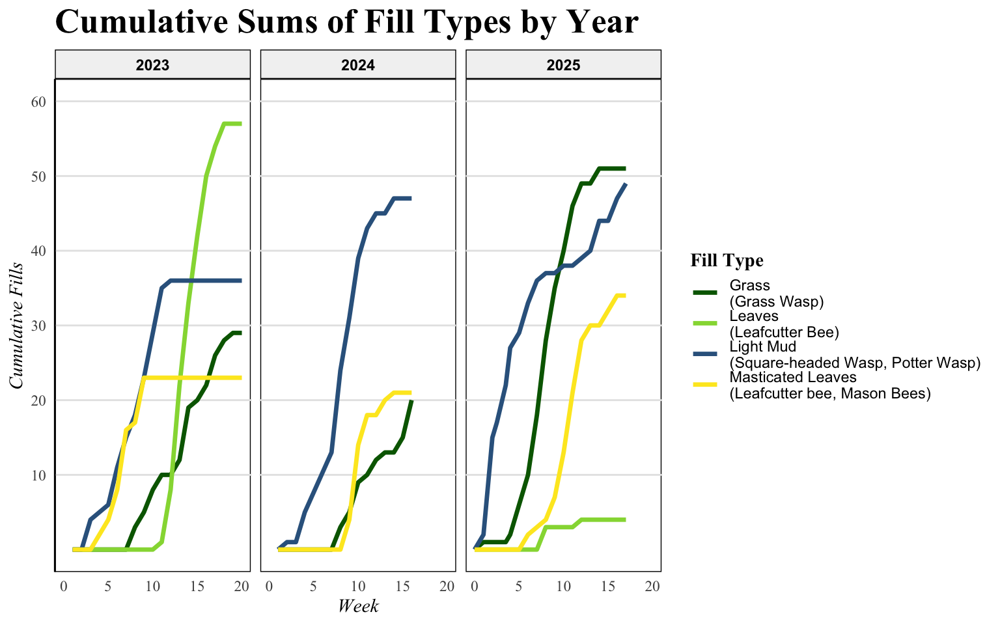
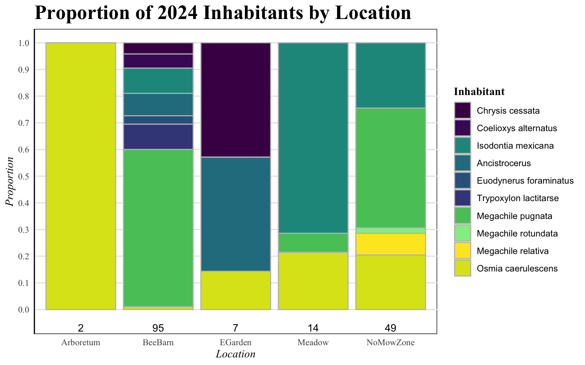
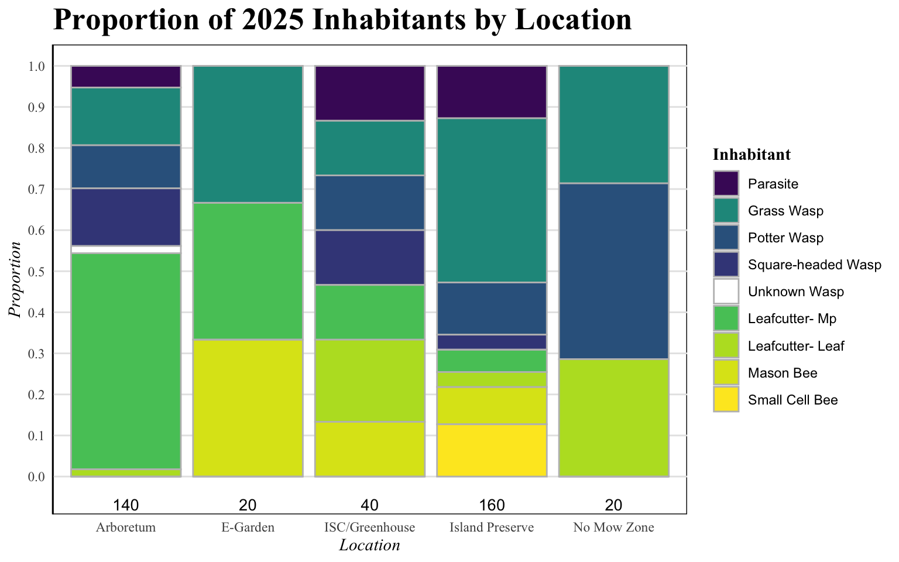
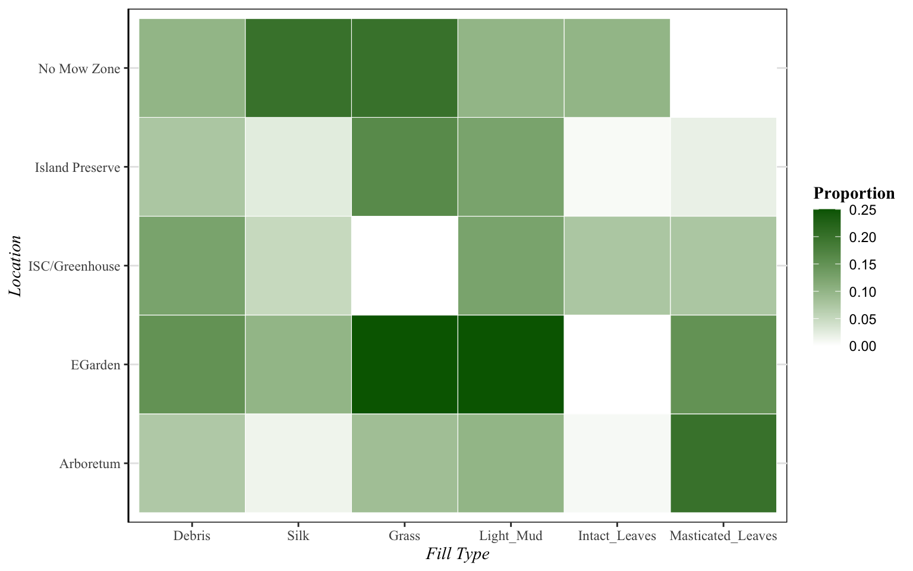

Total Tubes Filled Over 3 Years
371
Peak Week For Filling Behavior
10
Dominant Fill Type
Light Mud
Solitary bees and wasps are insects with unique reproductive patterns that involve the construction of nests in pre-existing cavities, such as hollow reed stems or holes from wood-boring insects. Cavity-nesting bees and wasps modify these nests by partitioning the tube using natural materials like mud, grass, and masticated leaves and provisioning their young with pollen or arthropods. As a result of their specific reproductive requirements, cavity-nesting bees and wasps can be used as indicator species for the overall impact of habitat management in a given area. This study aims to analyze the diversity and abundance of cavity-nesting species in Geneseo, NY, assessing fill types, temporal patterns, and environmental factors influencing these individuals across years and sites.
Cavity-nesting species can be monitored and supported using nesting boxes containing artificial tubes. This study examines solitary cavity-nesting bees and wasps in Geneseo, NY, using artificial nesting structures (“bee boxes”) to monitor their activity, diversity, and habitat preferences over multiple years. Fill types were analyzed and categorized as mud, grass, masticated leaves, or intact leaves. These fill types serve as indicators of which taxa are present, since different families of cavity-nesters use distinct materials. This information was used to gain baseline information on local cavity-nesting bee and wasp temporal patterns, identities, and environmental niches.


Individual fill types showed consistent and predictable timing across the three years that indicates the reproductive activity of wasp and bee taxa. Overall, filling occurred the most in Week 10, signifying that the beginning of August is the most reproductively active time period for cavity-nesting species. The beginning of June was generally dominated by light mud fill, indicating the occupation of potter wasps (Vespidae: Eumeninae) and square-headed wasps (Crabronidae). First appearing in Week 1, light mud was the most consistently noted to have frequent new fill throughout the beginning and middle of the summer but began to decline in August. Grass fill was also noted at the beginning of the summer, associated with the grass-carrying wasps (Sphecidae). First observed in Week 1, filling behavior using grass became the most frequent in Week 8, mid-July, and slowly declined until late September. Mason bee and leafcutter bee (Megachilidae) fill was first noted in Week 4, late June, with the appearance of masticated leaves in the tubes. Filling activity with masticated leaves peaked at Week 10 in the beginning of August but continued until Week 16 in mid-September. Intact leaves, associated with leafcutter bees (Megachilidae Megachile) followed a similar and slightly delayed pattern compared to masticated leaves. First noted in Week 8, mid-July, the filling of masticated leaves occurred most frequently during Week 13 in late August, and continued until Week 18, late September.


Temporal patterns of reproduction were analyzed in 2023, 2024, and 2025, from late May to September. The number of tubes placed differed by year, with 280 tubes in 2023, 160 tubes in 2024, and 380 tubes in 2025. Across all three years, the average number of tubes filled per week was 8.26. In 2023, the average fill per week was 7.95 tubes. In 2024, an average of 7.0 tubes were filled per week. The most fill was recorded in 2025, averaging 9.84 tubes per week. By the end of surveys in September, the 2023, 2024, and 2025 tubes had totals of 159, 98, and 182 tubes filled respectively. In total, the least number of tubes were filled in 2024, and the most tubes were filled in 2025. These differences were likely attributable to the different number of tubes placed each year.
The most common fill types observed differed by year. In 2023, leaves were the most observed fill type. Of the tubes filled with materials used by cavity-nesters (grass, light mud, leaves, and masticated leaves), 35.85% of the tubes were filled with leaves. In 2024, light mud was the most observed fill type, making up 47.96% of the filled tubes. In 2025, grass was the most observed fill type, making up 27.27% of the filled tubes. [JA15] Overall, 2025 demonstrated the most balance among different bee and wasp taxa, with relatively even proportions of grass, light mud, and masticated leaves. The differences among years are likely attributable to the different locations sampled.


In the fall of 2025, we were able to identify the insects that emerged from the 2024 tubes to the species level, and we classified these identities by the location the tubes were placed in. We found the highest diversity in the “BeeBarn” location in the Arboretum. The primary insect in the Arboretum was the leafcutter bee, Megachile pugnata. The leafcutter bee Megachile rotundata was also identified. Wasps identified included grass wasp Idsodontia mexicana, potter wasps in the genus Ancistrocerus and species Euodynerus foraminatus, and square-headed wasp Tropoxylon lactitarse. Parasitic cuckoo wasps, Chrysis cessata, and cuckoo bees, Coelioxys alternatus, were also identified in tubes from the “Bee Barn” in the Arboretum. Mason bee Osmia caerulescens was identified in the “Arboretum” boxes of the Arboretum.
In the spring of 2026, we dissected the 2025 tubes and preliminarily identified the occupants based on fill type and larval casings. We noted the most diversity in the Island Preserve. This location was determined to contain approximately three distinct species of leafcutter bee, at least one species of mason bee, and three families of wasps, including grass wasps, square-headed wasps, and potter wasps. The Arboretum tubes appeared to contain similar insects as in the 2024 tubes. The leafcutter bee Megachile pugnata, appears to have remained the primary insect in this location. Mason bees, potter wasps, square-headed wasps, and grass wasps also appear to still be present, with the notable inclusion of an unidentified wasp. Another notably diverse location included the tubes at the ISC and Greenhouse locations in 2025. This could be attributed to the addition of a native plant garden in close proximity to each of these boxes, despite the locations being in a less natural area. The exact number of species and their identities will be determined in the fall of 2026.

In the year 2025, five major locations were sampled for cavity-nesting bees and wasps: the No-Mow-Zone, the Island Preserve, the ISC/Greenhouse, the E-Garden, and the Arboretum. Light mud was the only major fill type group to be found in all locations tested. This is consistent with the concept that many different taxa use this fill type, making it both the most common overall and the most adaptable to different locations. In contrast, intact leaves were only found in two locations, indicating that leafcutter bees may be more specific to certain environments. The highest proportion of any one fill type in a location was 25%, demonstrated by light mud and grass in the E-Garden.
The goal of this research is to gain baseline information on the cavity-nesting bees and wasps in Geneseo, NY. Populations of wild bees are declining as a result of declines in floral resources. Monitoring and supporting cavity nesting bees and wasps is crucial; they are beneficial to both local ecosystems and economies. Surveying bee and wasp species provides information on the ecological state of an area. Due to their specific habitat requirements, trophic diversity, and roles as pollinators, cavity-nesters can serve as an indication of environmental change and influences of invasive species. Wild bees pollinate flowers when feeding on nectar and pollen. Solitary adult wasps also feed on nectar providing pollination. Wasp larvae however, feed on arthropod populations as the adults lay their eggs with arthropod provisions. Crops and plants rely on cavity-nesting pollinators to facilitate reproduction. Increased wildflowers plantings result in increased wild bee diversity and abundance. This has been utilized by commercial farms, which plant wildflower gardens adjacent to agricultural fields in order to take advantage of these ecological links. In Geneseo, a town dominated by agricultural fields, monitoring cavity-nesting bees and wasps is essential to local communities.